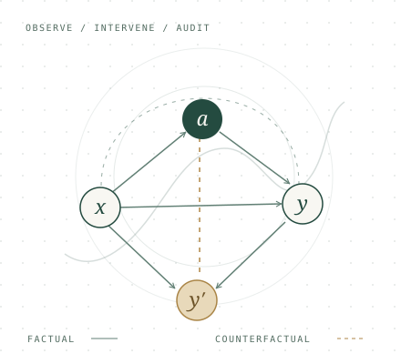

Home
APPLIED MATHEMATICS · MACHINE LEARNING
Sheng’en Li
Reliable learning.
Grounded in mathematics.
I’m an undergraduate in the dual-degree program at Duke Kunshan University and Duke University. I study how machine learning systems can remain reliable, fair, and auditable as the world around them changes.

to trustworthy decisions.
DUKE KUNSHAN & DUKE UNIVERSITY B.S. Applied Mathematics / Expected Dec. 2026
01 / RESEARCH
Questions I work on
I.
Counterfactual learning
How can adaptive systems make fair decisions under feedback, limited overlap, and distribution shift?
II.
Graph & temporal learning
How do we learn from evolving relationships and detect anomalies without hiding subgroup failures?
III.
Scientific ML & verification
When is a model’s structure adequate, its parameters identifiable, and its numerical behavior verifiable?
02 / SELECTED PUBLICATIONS
Recent work
ICML
2026
COPF: An Online Framework for Deployment-Stable Counterfactual Fairness in Evolving Graphs
Online counterfactual estimation, auditing, and fairness control for evolving graph recommendation.
First author Paper
ECAI
2025
Enhancing Fairness in Autoencoders for Node-Level Graph Anomaly Detection
Fairness-aware graph autoencoders with a counterfactual objective based on causal interventions.
Co-first author Paper
* Equal contribution. See the full publication list for manuscripts in preparation and under review.
03 / CURRENTLY
Theory meets practice.
RESEARCH COLLABORATION
Verified Taylor-model flowpipes
Developing a differentiable flowpipe engine in PyTorch with Prof. Huan Zhang’s group at the University of Illinois Urbana-Champaign.
INDUSTRY
Quantitative Developer Intern
Building reproducible financial-data pipelines and evidence-traceable LLM-agent workflows at Shangchen Private Fund, Shanghai.
GET IN TOUCH
Let’s talk research.
Counterfactual inference, reliable learning, and the questions in between.